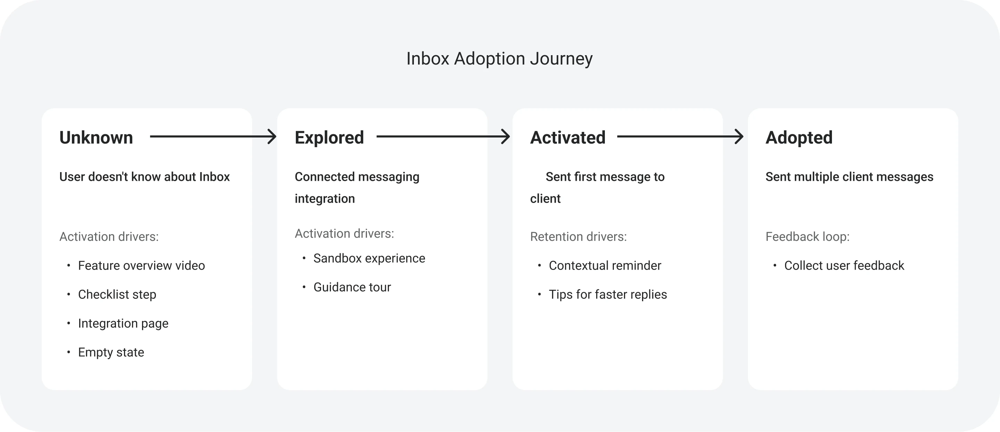
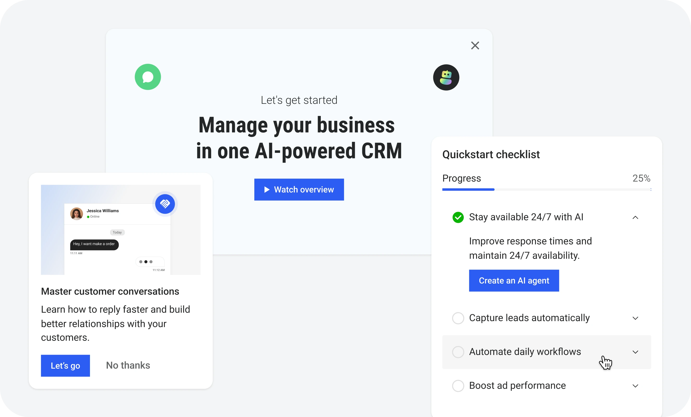
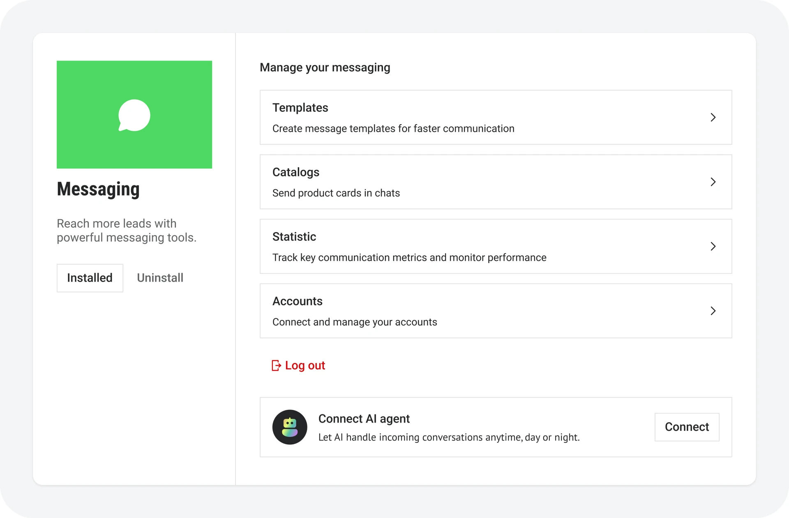
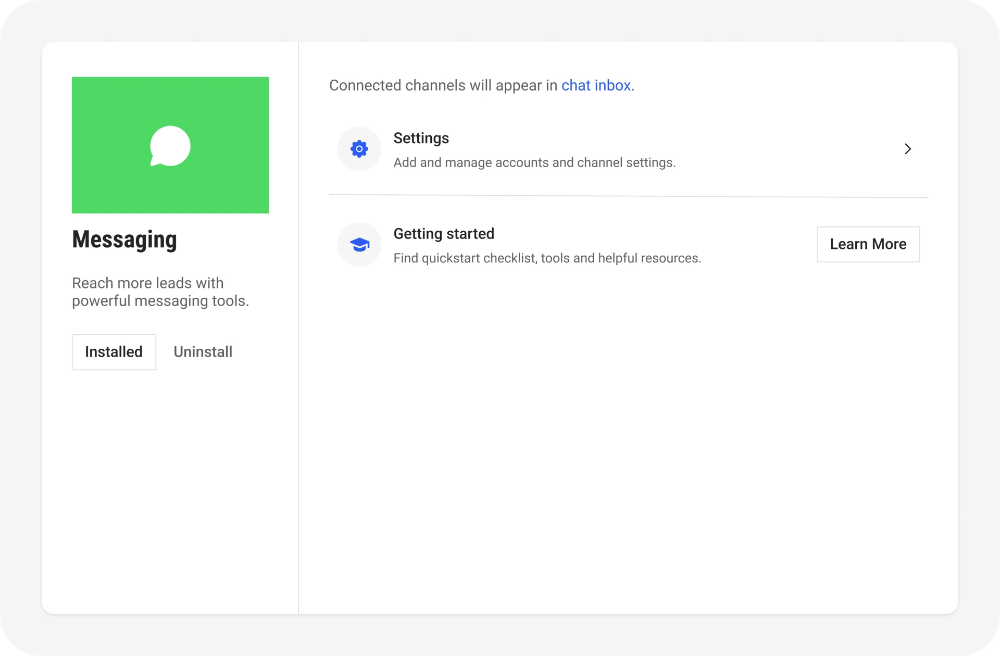
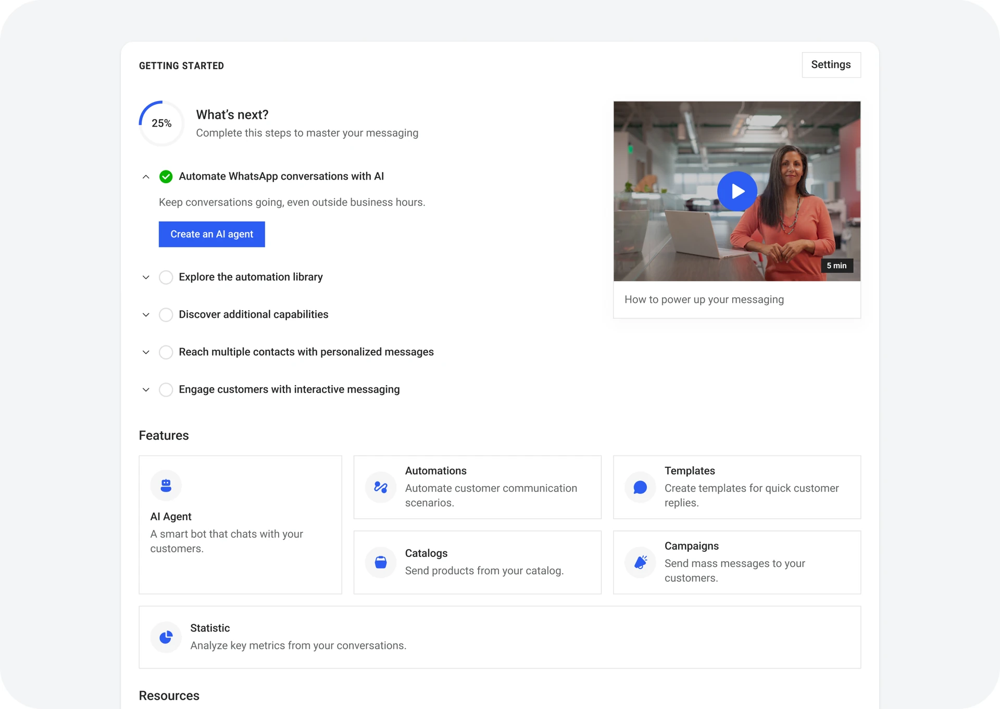

Kommo formerly amoCRM — an international CRM for sales and customer communication through messengers, with 1M+ MAU
The task
Get new users to the point where they actually see the product's value.
Results
+4% on trial → subscription conversion, plus a reusable activation framework for the whole product.
Activation: from trial to paid subscription
The problem
The team came with a hypothesis: users do not understand the product's value and leave before they pay. The interviews said something else — most people got started just fine. They connected messengers, set up the CRM and ran deals.
The problem showed up later. Many never used the additional features — not because they were difficult, but because they did not know the features existed or could not see how to start.
Inside the company there was a reason for that: every team promoted its own features in its own way, and there was no shared approach to activation. Capabilities surfaced in different places in the interface, so a user saw a pile of unrelated hints — and usually ignored them.
It was made harder by the fact that the user journey is not linear: it depends on goals, on which integrations are connected, on the state of the account and on where the person entered the product. A single onboarding that would fit everyone simply did not exist.
The insight
Going through the interviews and the user scenarios produced two statements that turned the task around:
- People were not leaving because the product was hard, but because they did not know what was there. The value was within reach — they just never got to it.
- But promoting a feature head-on does not work either: a promo means nothing until someone has hit the problem that feature solves. What works is not the fact that “we have this”, but the moment — a user is typing the same message by hand for the tenth time, and right there an offer to turn it into a template lands on a real need.
That was the turning point: I stopped designing onboarding for a specific feature and started describing a model of adoption, where every stage of getting to know a feature has its own moment and its own mechanic.
Adoption Matrix
To systematise the scenarios I used an Adoption Matrix — a model that describes the path from a user's first encounter with a feature to using it regularly.

For each stage I defined the mechanics that fit it:
- feature overview;
- onboarding checklists;
- empty states;
- contextual hints;
- promo blocks;
- feedback requests.
Instead of every team solving activation in its own way, the product got one framework for activating and promoting features that can be applied to any part of it.

First application: messengers
The first place the model landed was messenger integrations — the core hub of the product, the thing features from other areas hang off: broadcasting, automation, the AI agent.
Connecting and using integrations was built on legacy logic made of modal windows. That solved the connection itself, but did almost nothing to explain what to do next or what a user gets once an integration is connected.
The approach itself came with a set of limits:
- not enough room to explain what the integration can do;
- no next step after connecting;
- no way to introduce the functionality step by step;
- nowhere to promote new capabilities of the product.

Reworking the whole scenario was not an option: the changes would have had to roll out to every integration in the product, which multiplies the engineering effort. So I left the connection flow alone and changed what happens after it.
Teaching people needs room, and a modal does not have it: a connection form fits, an explanation of what to do next does not. So I split the two jobs apart.
Modals stayed responsible for connecting and managing an integration. Teaching and promotion moved to a new Getting started page.

Getting started became the step between “the integration is connected” and “the person is using the product”. It holds:
- a checklist of next steps;
- a tutorial video;
- an overview of the integration's key capabilities;
- links to helpful articles.

The result
The solution is a compromise: the legacy connection flow is still alive. We did not rewrite it, we went around it, moving teaching and promotion to a place with enough room for them.
The product team estimates that simplifying the connection flow together with launching Getting started added about +4% to trial → subscription conversion. The estimate compares cohorts of trial accounts that connected a messenger before and after the release.
The side effect mattered more than the local result: teams stopped solving activation each in their own way. Instead of one-off fixes there is now a single approach to designing product adoption that scales across different parts of the system.
That made it possible to:
- show that teaching people the product moves conversion, rather than just “improving usability”;
- introduce new capabilities inside the interface in a systematic way;
- build one shared approach to promoting new features;
- make users less dependent on contacting support.
Outcome
This work showed me that designing large enterprise products is first of all work with people, constraints and a complex system — and only after that with interfaces.
Almost every decision required going deep into the existing business logic, defending the decision in front of stakeholders, long conversations with engineers, product managers and other designers, and finding a compromise between user needs, business goals, technical constraints and what the team could actually build.
This is where I became a product designer: I learned to think in systems, to make decisions under uncertainty, to defend them in front of stakeholders, and to look for solutions that bring value to users while staying realistic for the business and for engineering.
Other cases
AdTech platform
How redesigning the wizard cut the core flow from 14 to 8 minutes and helped close deals with Farfetch and Target

Fitness app
Launched a fitness app for an influencer with an audience of 2M+ followers

SaaS for HR managers and recruiters in healthcare
Made candidate screening 2.3× faster for a major client as the product entered the US market